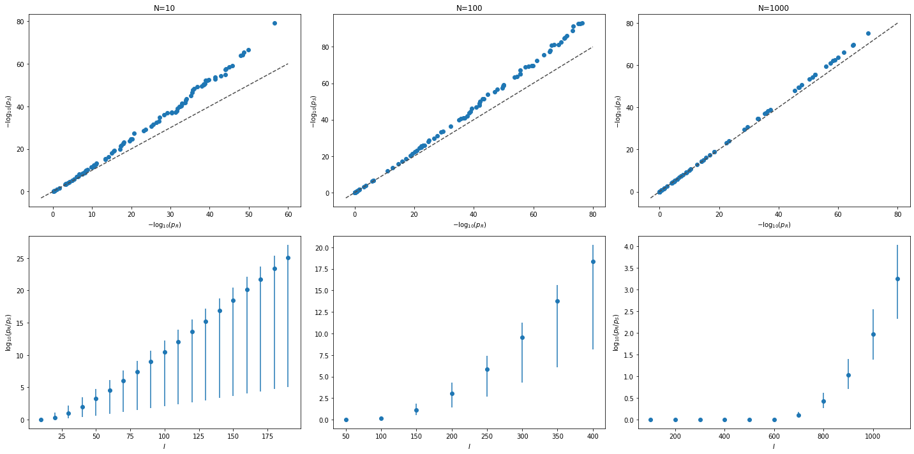

Welcome to PascalX’s documentation!¶
PascalX is a python3 library for high precision gene and pathway scoring for GWAS summary statistics. Aggregation of SNP p-values to gene and pathway scores follows the Pascal methodology, which is based on \(\chi^2\) statistics. The cummulative distribution function of the weighted \(\chi^2\) distribution is calculated exactly via a multi-precision C++ implementation of Ruben’s and Davies algorithm. This allows to apply the Pascal methodology to modern UK BioBank scale GWAS.
Highlights:
Multi-precision weighted \(\chi^2\) cdf calculation (up to 100 digits)
Parallelization over chromosomes and/or genes
Fast random access to reference panel genomic data via own indexed SNP database
Tissue enrichment test (experimental)
Note
This is a basic functionality only version of PascalX. New features will be added then ready for publication.
Warning
PascalX is a research level tool. No warranty or guarantee whatsoever for its correct functionality is given. You should perform your own consistency checks on results PascalX implies.
Why PascalX:
In order to illustrate the impact of approximating the cdf of the weighted \(\chi^2\) distribution at very small p-values via matching only the first two moments, we calcuated for an uniform random sample of weights and arguments \(\log_{10}\) transformed p-values at \(N=10\), \(N=100\) and \(N=1000\) degrees of freedom via Ruben’s algorithm at 100 digits precision and the Satterthwaite-Welch approximation. The resulting p-values are ordered, \(-\log_{10}\) transformed, and plotted against each other (QQ-plots), see top row of the following figure.
In the second row, the ratio of p-values is plotted at various fixed arguments, sampled from different weights. The bullet point marks the mean and the error bar the range of values observed. We infer that the Satterthwaite-Welch approximation tends to overestimate the significance, in particular for small \(N\). Note that the error can go beyond several orders of magnitude.